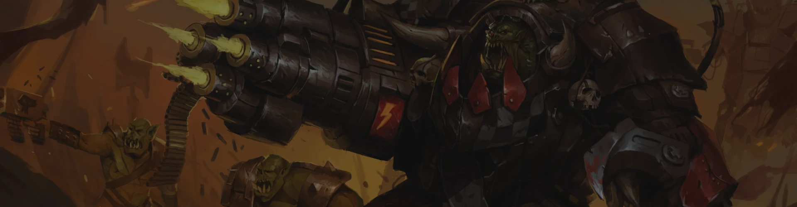
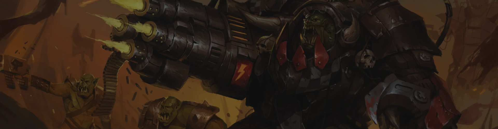
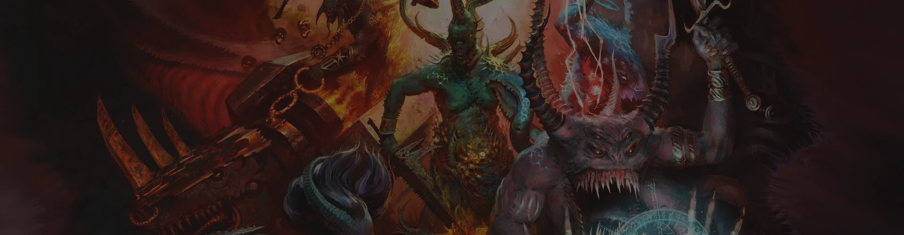
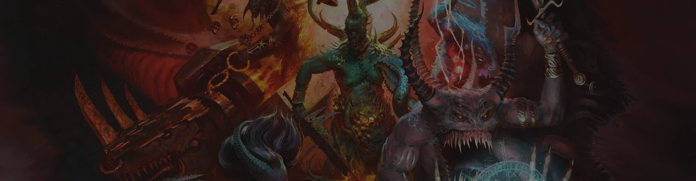
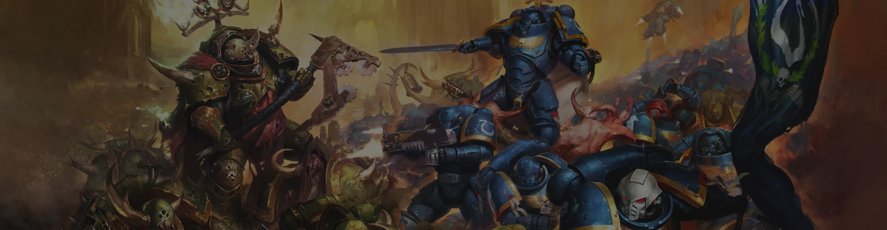
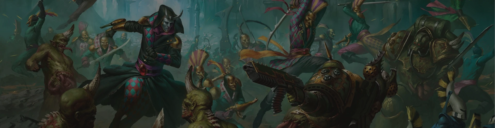
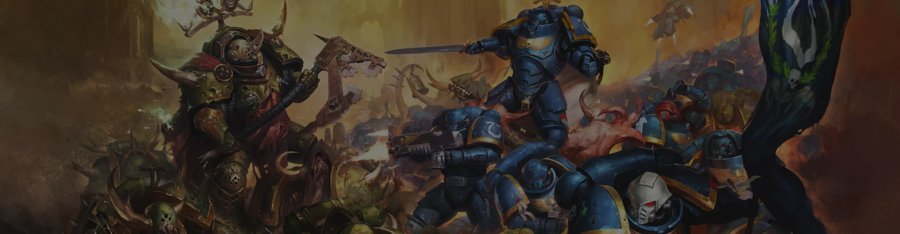
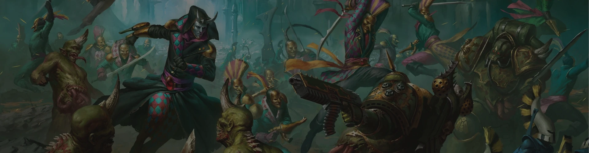
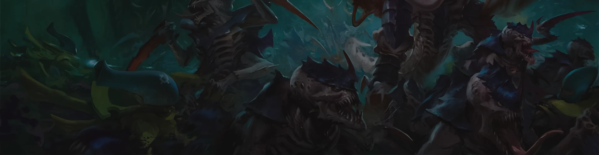
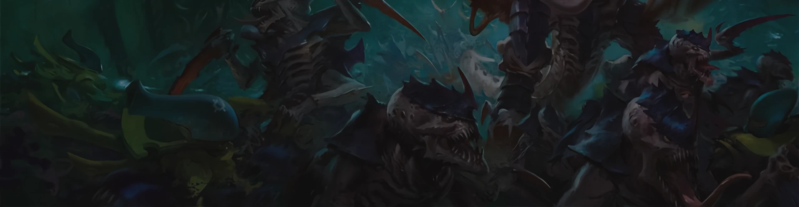

 


 





 



About The Factions
Adeptus Custodes
"These men are my bodyguards, their lives forfeit to the guarantee of my physical safety. Of their loyalty to me there shall be no question nor doubt. I, and I alone, shall have the authority to stand in judgement over them. No other commander shall they have in battle nor in service. None shall bar them from me and none shall hamper or stall their mission. So it is decreed!"
—Ancient declaration made by the Emperor of Mankind during the Age of Strife
The Adeptus Custodes, known as the Legio Custodes during the era of the Great Crusade and Horus Heresy, and colloquially as the "Ten Thousand," is the Imperial adepta responsible for protecting the Imperial Palace and the physical body of the Emperor of Mankind, as well as serving as His most important emissaries, His companions, and the keepers of His many secrets. The Custodes is an elite cadre of genetically-engineered transhuman male and female warriors who are even more potent in combat than the Adeptus Astartes. They are to the Space Marines as the Emperor is to His primarchs, and it is rumoured that each was created by the Master of Mankind personally. His might permeates them, burns in their eyes and flows through their veins as surely as their blood. As such, the Adeptus Custodes are widely regarded as the deadliest warriors in the galaxy, Human or otherwise.
Where Space Marines represent the mass-produced, genetically-engineered soldiers of the Imperium of Man, the Adeptus Custodes are a force of individual warriors, each a bastion in their own right and a sentinel of unmatched capability and singular purpose created to counter any possible threat -- Human, alien or Daemonic. These warriors have stood in the presence of the immortal Emperor of Mankind since before the time of the Unification Wars. For ten thousand Terran years and more, the Custodians have stood watch over their lord and master, serving as the Emperor's personal heralds and praetorian bodyguard.
During the Great Crusade these resplendent warriors guarded the Emperor wherever He went and swore to give their lives to protect His. After His incarceration in the Golden Throne following the Horus Heresy ten standard millennia ago, they have taken a far more limited role in the Imperium of Man. They almost never leave Terra and only very rarely are seen outside the Imperial Palace as they watch over their recumbent master and patrol the precincts of the Emperor's palace, ever vigilant of threats. It is only the Adeptus Custodes who decide who may enter the Sanctum Imperialis of the Emperor at the heart of the Inner Palace, and when they may do so.
With the birth of the Great Rift in the Era Indomitus, and the resurrection of Primarch Roboute Guilliman as the lord commander of the Imperium and Imperial Regent, the Adeptus Custodes have been forced to take a more active role in galactic affairs. A force of Custodians has followed Guilliman's Indomitus Crusade out into the galaxy, often serving as the heralds of a Torchbearers fleet bringing the Primaris creation technology to existing Space Marine Chapters.
This was done both to reassure the existing Chapters of the Adeptus Astartes that the gift of the Primaris Space Marines was ordained by the will of the Emperor, but also because in this new era of constant threat, the Custodes have come to a hard realisation: sometimes, the best defence is found on offence.